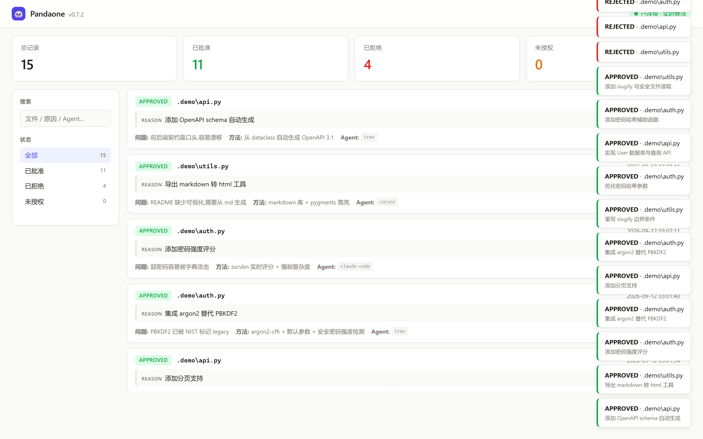
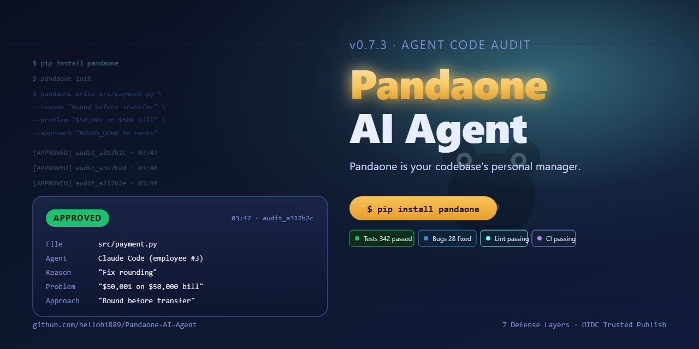

— 科技数码 · 实测 —
我让 AI 改代码,装了一道闸
一个被严重低估的工程问题 · Pandaone v0.7.3 实测

▲ 实测截图:Pandaone 实时仪表盘,12 条 APPROVED + 4 条 REJECTED
说真的,这件事我做完了才敢说。
上月某天凌晨,我用 Cursor 让 AI 改一段用户认证逻辑。AI 干得很快,改完了我也没细看,直接 commit。第二天 review 一遍,发现一个微妙的 常量时间比较被改成了普通字符串比较。
时序攻击。本来是防住的,这一改,就开了。
我事后翻了 5 遍 git log 才反应过来,就是这个 AI 改的。
这就是问题。AI 改代码的工程风险,不在模型会不会写错,而在它写错了你不知道。
一个被忽视的事实
我们这一代人,正在做一件前无古人的事——把代码的修改权交给一个非人类。
它可以 30 秒写完一段过去要 30 分钟的代码。它也可以 30 秒写出过去你不会写的 bug。它不知道你的项目历史。不知道你之前踩过的坑。不知道你团队的代码规范。它甚至不知道自己改了什么——它一次只看到上下文的一小段。
但它改起来,比人类还自信。
这件事,我想了很久。
把 audit 当成 git commit 一样严肃
后来朋友推荐了一个东西,叫 Pandaone(原 PandaX)。开源,免费,装了一下午,我现在每次让 AI 改代码,都得走它。
它的核心思路,一句话讲完:
AI 想改 .py,先告诉我 4 个东西:
为什么改 · 解决什么问题 · 用什么方法 · 改了什么
差一项,不让写。
写完了,审计日志会写到 .pandaone/pandaone.jsonl,浏览器自动跳出来面板,我自己盯一眼。
改完了还有指纹自检——它会给自己算 SHA256,如果我自己手动去改 pandaone.exe 给自己开后门,装在 hooks 里的指纹会告警。这是一道对 AI 隐藏的关。
听着是不是挺折腾?其实不。一行 pandaone write 命令,Claude Code / Cursor / Trae 都能自动塞进 skill 里调用。
5 层防御 · 第一性原理
它做了 5 层,各挡一条路:
L1 · 文件锁 —— 把 .py 改成只读。AI 想写,先解锁。解锁=明确允许。
L2 · watchdog —— 后台盯文件系统。AI 绕开 L1 直接写?它会立刻锁回去。
L3 · pre-commit hook —— git commit 前检查 .pandaone/pandaone.jsonl 是否被一起 stage。没 stage?直接拒绝 commit。
L4 · README startup —— 启动时打印 banner,提示当前是受审计状态。
L5 · 自指纹 —— pandaone.exe 自己的 SHA256,被改了就告警。
注意一个细节:L3 是真正不可绕过的关。除非 git commit --no-verify,否则任何 .py 改动没有审计就走不到 main 分支。CI 那边再加一个 pandaone ci 校验,审计记录数对不上,PR 直接 fail。
5 层不是冗余。第一性原理就是:假设每一层都会被绕开,所以每层都得独立成立。
实测:装一遍,改一次
实测命令 4 条:
pip install pandaone-guard
pandaone init --root .
pandaone lock
pandaone install-hook
装完我做了个实验,故意让 AI 改一个 .py 文件但不调 write 命令,直接 git commit。
pre-commit hook 立刻挡住:
[Pandaone] 拒绝提交: 检测到 .py 修改但审计日志未更新
被修改的文件:
src/auth.py
请使用 pandaone write 命令代替直接 git commit
接着我让 AI 调 pandaone write --file src/auth.py --reason "..." --problem "..." --approach "...",审计记录写进去,commit 放行。

▲ Pandaone 官方 social preview,1280×640,GitHub repo 顶部展示
不吹不黑
用了三周,说几个观察:
✓ 真有用:CI 上接上 pandaone ci,PR 改了几行就要几条审计。AI 偷改代码的成本从「看 log」变成「每次都要写 reason」,门槛拉高一个数量级。
✓ 审计可追溯:哪天出问题,翻 jsonl 就能看到「是 cursor 在 3 月 17 日改的,reason 是修 bug,实际是引入 CVE」。这是过去做不到的事。
⚠ 不是银弹:L3 hook 还是可以 --no-verify 绕过。所以它防的是「忘了审计」,不是「故意不审计」。后者靠 PR review + CI 拦截。
⚠ Python only:目前只挡 .py。.ts / .go / .rs 还在 TODO。生产项目用 TS 的话,要等。
适合谁
- 团队刚把 Cursor / Claude Code / Trae 接进 CI/CD,担心 agent 改坏代码没人发现
- 一个人写项目,想给 AI 加个「自动 code review」
- 公司要求所有 .py 改动有审计 trail(SOX / 等保合规)
- 单纯好奇,想看看「代码审计到底能不能被工程化」
怎么装
pip install pandaone-guard
cd your-project
pandaone init --root .
pandaone lock
pandaone install-hook
GitHub: github.com/hellob1889/Pandaone-AI-Agent · MIT License · v0.7.3 · 342 测 / 28 bug · 中文 README
写在最后
AI 改代码这事,挡是挡不住的。趋势就是让 AI 写更多,我们审更少。
但「审」这事,不能靠人脑死扛,得靠工程化。
Pandaone 这类工具做的是:把「我信任这段代码」这件事,从模糊的体感,变成可追溯的 JSONL 行。
这是一种新的工程范式。我愿意押注它。
— END —
如果有用,点个在看